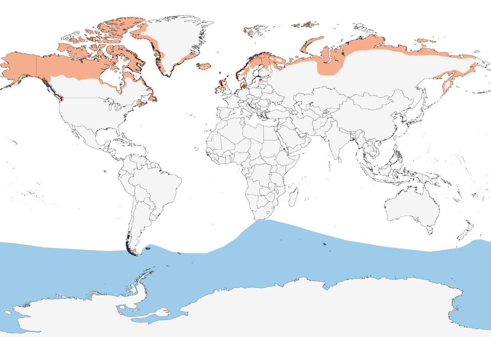

The Arctic Tern boasts a remarkable circumpolar distribution, making it the northernmost of all tern species. This bird can be found breeding in various regions around the world, and its migratory feats are nothing short of awe-inspiring.
Arctic Terns commonly breed on islands, coastal mainland areas, and the High Arctic. Their breeding grounds extend from the North Pacific to the North Atlantic, reaching as far south as 50°N. Notable breeding areas include Greenland, Iceland, the British Isles, the Baltic Sea, Norway (including Svalbard), and the Barents Sea region. Remarkably, these birds exhibit little geographical variation, making them a monotypic species.
The Arctic Tern finds a welcoming habitat along the coasts of Svalbard, with the greatest numbers concentrated in the western and northern parts of Spitsbergen. Breeding occurs both individually and in colonies, sometimes comprising several hundred pairs.
What truly distinguishes the Arctic Tern is its incredible migratory journey. These resilient birds travel vast distances, twice a year, between their breeding grounds and wintering sites. Incredibly, they undertake extensive movements within the Antarctic Ocean during the austral summer. This remarkable feat earns the Arctic Tern the title of having the longest migration of all bird species.
Arctic Terns begin their journey back to Svalbard in the last days of May or the beginning of June, where they once again grace these Arctic shores. They eventually bid farewell, departing between the end of August and the middle of September, marking the completion of their incredible annual cycle. The Arctic Tern's global distribution and astonishing migratory behavior make it a captivating symbol of nature's wonders and a testament to the resilience of life in the world's northernmost reaches.

Arctic Terns showcase remarkable feeding behaviors adapted to their coastal and open ocean habitats. They employ two primary techniques for acquiring their food:
Arctic Terns maintain a diverse diet, targeting a variety of small fish species and insects. Their adaptability extends to their foraging habits during migration: